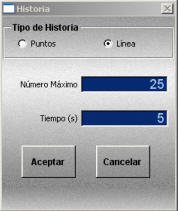
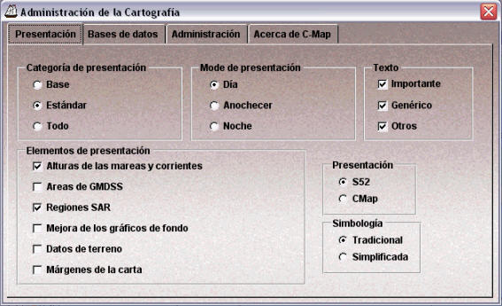
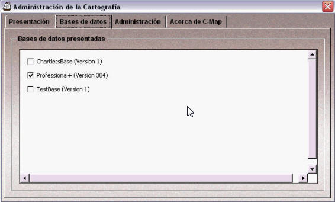
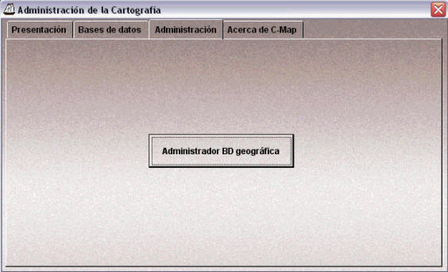
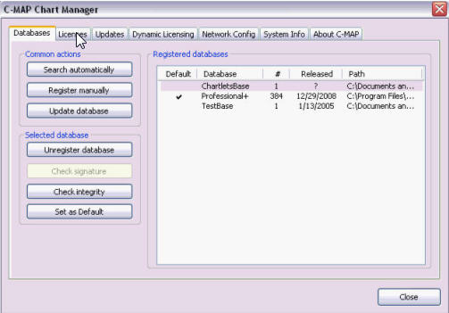

Menú Herramientas
El menú Herramientas consta de las siguientes opciones:


Mediante esta ventana el operador podrá realizar las siguientes acciones:
- Configurar los anillos de distancia: Para configurar los anillos, se introduce en la ventana el Radio entre anillos (de 0.01 a 100.00 millas) y la Cantidad de anillos (entre 1 y 10, ambos incluidos). Los límites son configurables en el fichero de configuración.
- Modo geográfico: Mientras esta opción esté seleccionada, los anillos de distancia se calculan geográficamente por lo que su representación gráfica no es exactamente un círculo sino una elipse aproximada por una polilínea que une los puntos situados a la distancia geográfica configurada y separados un grado. Si esta opción no está seleccionada, la representación gráfica de cada anillo de distancia sí será un círculo exacto, con un radio igual a la distancia gráfica, midiendo desde le centro hacia el norte, al punto situado a la distancia geográfica configurada.
- Mover anillos: Mientras esta opción esté seleccionada, cada vez que se hace clic con el botón izquierdo del ratón sobre un punto de la presentación cartográfica, los anillos de distancia toman como centro dicho punto. En el caso de que exista una unidad en este punto, se muestra un aviso al operador permitiéndole elegir si quiere enganchar los anillos a la unidad o no.
- Filtrar: Mientras esta opción esté seleccionada, los anillos de distancia no se presentan.
El comportamiento de la línea es diferente según qué extremo tenga enganchado a una unidad:
- Si ningún extremo está enganchado a unidades, la línea no se mueve.
- Si sólo el extremo inicial está enganchado a una unidad, la línea mantiene su distancia y demora, pero moviendo su origen con la unidad, es decir, su extremo final no está anclado a la posición geográfica inicial.
- Si sólo el extremo final está enganchado a una unidad, el origen se ancla a la posición geográfica inicial y el extremo final se mueve con la unidad, por tanto, la distancia y demora de la línea va cambiando.
- Si ambos extremos están enganchados a unidades, la distancia y demora de la línea va cambiando con el movimiento de las unidades.
Estas líneas desaparecen automáticamente una vez pasado su tiempo de vida (configurable en el fichero de configuración), aunque alguno de sus extremos esté enganchado a una unidad.
- Activada: Al seleccionar esta opción, si hay unidad en Hook, se abre la siguiente ventana de configuración de los puntos de historia. Si no hay unidad en Hook, se mostrará un mensaje de error al operador.
- Desactivada: Al seleccionar esta opción, se desactiva la presentación de los puntos de historia de la unidad en Hook. Si no hay unidad en Hook, se mostrará un mensaje de error al operador.

Mediante esta ventana el operador podrá configurar los puntos de historia, introduciendo el tipo de representación gráfica (Puntos o Línea), el Número Máximo de puntos o tramos con la que se representa la historia (entre 1 y 100), y el intervalo de Tiempo (entre 1 y 300 segundos) considerado entre puntos o tramos.
- Punto Máxima Aproximación: Al seleccionar esta opción, cuando el Hook está enganchado a una unidad y la Marca a otra, se calcula y representa gráficamente el Punto de Máxima Aproximación entre la unidad en Hook y la unidad en Marca.
- Posición Futura: Al seleccionar esta opción, cuando el Hook está enganchado a una unidad, se presenta la siguiente ventana que permite introducir el tiempo en segundos para el que se desea conocer la posición futura de la unidad. Una vez pulsado el botón Aceptar se calcula y representa gráficamente la Posición Futura de la unidad en Hook.
- Interceptación: Al seleccionar esta opción cuando el Hook está enganchado a una unidad y la Marca a otra, se calcula y representa gráficamente la Interceptación de la unidad en Marca a la unidad en Hook.

Si no existe unidad en Hook o no existe unidad en Marca se presentará un aviso de error al operador.


Si no existe unidad en Hook se presentará un aviso de error al operador.

Si no existe unidad en Hook o no existe unidad en Marca se presentará un aviso de error al operador.
Nota: La opción Administración de la Cartografía sólo aparece cuando se usa cartografía C-Map.
Esta ventana tiene varias pestañas a través de las cuales el operador puede acceder a distintas opciones de configuración de la cartografía C-Map.
Presentación

La pestaña presentación tiene las siguientes opciones:
- Línea de costa (pleamar)
- Veril de seguridad.
- Indicación de peligros.
- Sistemas de organización del tráfico marítimo.
- Línea de costa (pleamar)
- Ayudas a la navegación, fijas y flotantes.
- Límites de pasos, canales, etc.
- Puntos notables tanto visibles como radar.
- Zonas prohibidas y restringidas.
- Límites de la escala de cartas.
- Indicación de advertencias.
- Sondas.
- Tuberías submarinas.
- Derrotas de transbordadores.
- Detalles de todos los peligros.
- Detalles de ayudas la navegación.
- Contenido de advertencias.
- Nombres de lugares.
Base: Al seleccionar esta categoría, se aplica el filtro ECDIS "Base" a la presentación de la carta. Con este filtro, se muestra el nivel mínimo de información necesario para la navegación a cualquier hora, en cualquier zona geográfica y en cualquier circunstancia, sin que sea suficiente para una navegación segura.
La información de la carta se reduce a los siguientes elementos:
Estándar: Al seleccionar esta categoría, se aplica el filtro ECDIS "Standard" a la presentación de la carta. Con este filtro, se muestra toda la información que se requiere normalmente para navegar.
En este caso, la carta muestra la información Base y además los siguientes elementos:
Todo: Al seleccionar esta categoría, no se aplica ningún filtro a la presentación de la carta y por tanto se muestran todos los objetos geográficos. En la carta se muestran, además de los anteriores, los siguientes elementos:
S52 - Se basa en el modelo de presentación S52.
C-Map - Se aproxima al modelo de presentación estándar internacional "Chart 1".
Simplificada - Cuando se selecciona esta opción, los símbolos aparecen simplificados (IMO Draft Performance Standards).
Tradicional - Cuando se selecciona esta opción, se muestra la simbología estándar (International Chart 1).
Bases de Datos

La pestaña Bases de Datos muestra una ventana en la que se puede elegir la base de datos usada para la presentación de las cartas.
Administración

La pestaña Administración muestra un botón desde el que se abre la ventana de gestión de la base de datos de C-Map.
